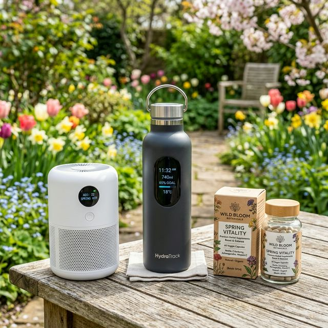
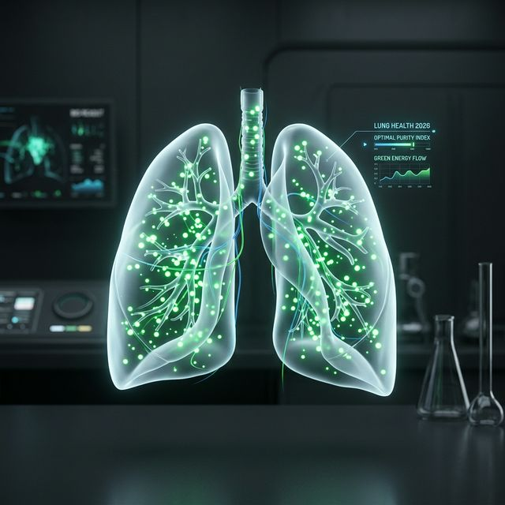

"매년 봄이면 비염과 감기로 고생하시나요? 당신의 면역 시스템이 쓰레기라서가 아닙니다. 환경에 대응하는 전략이 없기 때문입니다."
2026년의 황사와 미세먼지는 이전보다 훨씬 미세한 입자로 변해 우리 혈관까지 직접 침투합니다. 단순히 마스크를 쓰는 것만으로는 부족합니다. 체내에 쌓인 독소를 배출하고, 실시간으로 변화하는 대기질에 맞춘 개인별 맞춤형 케어가 시작되어야 합니다. 건강은 관리하는 자만이 누리는 특권입니다.

[이미지 1: 2026년 필수 건강 관리 아이템과 스마트 웰니스 키트]
1. 스마트 웨어러블과 기관지 정화
2026년에 유행하는 스마트 가디언 루틴의 핵심은 항산화 수치 모니터링입니다. 체내 염증 지수가 올라가기 전에 스마트링이 알람을 보냅니다. 이때 즉시 항염 특화 주스를 섭취하거나 고농도 음이온 기기를 활용해 기관지를 정화해야 합니다. 문제가 생기고 나서 약을 먹는 건 아마추어의 방식입니다.

[이미지 2: 깨끗하게 정화된 기도를 상징하는 메디컬 아트워크]
2. 삶의 질을 높이는 '공기 설계'
집안 환경 개선은 건강 개선의 시작입니다. 2026년형 공기청정기는 단순 필터링을 넘어 산소 농도를 적정 수준으로 강제 유지해 줍니다. 아침에 일어났을 때 머리가 무겁다면 당신의 침실 공기 설계가 잘못된 것입니다. 돈이 들더라도 건강을 설계하세요. 그게 가장 큰 절약입니다.
오늘 아침, 상쾌하게 일어나셨나요?
어디가 가장 불편하신지 댓글로 남겨주세요.
생활 습관 하나만으로도 드라마틱하게 바꿀 수 있는 개선법을 알려드립니다.